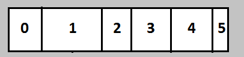
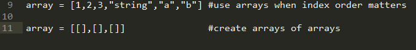
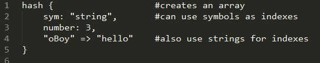
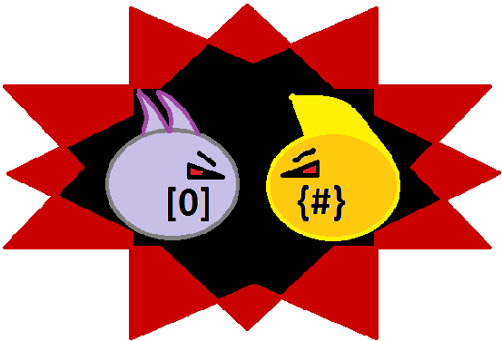

Most people learn arrays before hashes so I'll start there. Arrays can be thought of as mini databases. They are chunks of memory that are broken into blocks where objects can be stored. I know I know, WHAT!?!?
Here's a picture.

Each block of an array is indexed starting at 0,1,2... Arrays are great for storing ordered lists of objects. You can also use 2 dimentional arrays to create table or charts. That's right, arrays of arrays. So many things can be done with arrays, they are an essential tool for any programmer. Learn them!

Next we have hashes. Hashes are very similar to arrays. Hashes are also mini databases that hold objects, but hey! What's the difference? Hashes can use strings or symbols for indexing. This has advantages and disadvantages. For one it may be easier to remember where you stored something important if you have a corresponding word to look it up, rather than a number. On the down side there is no order to hashes. So before you choose hashes or arrays, think about your situation and whether or not order is important to your data. One last note: Hashes and hold arrays, and arrays can hold hashes. Have Fun!


RyanImmesberger@gmail.com
Twitter: @rimmesbe